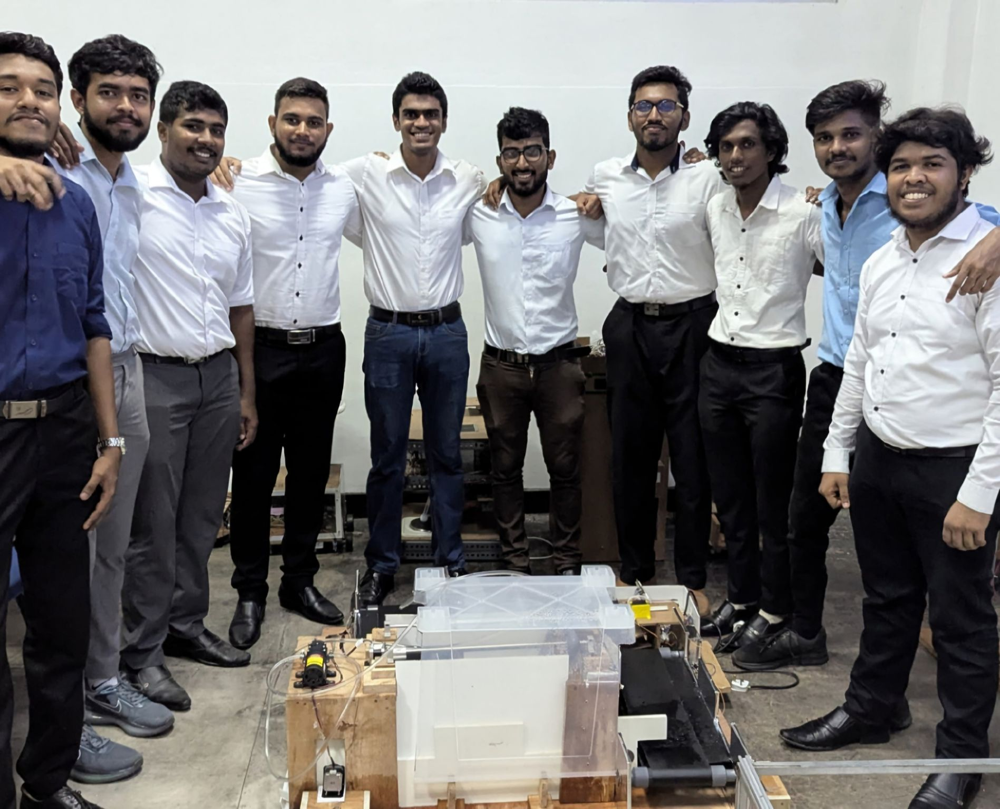
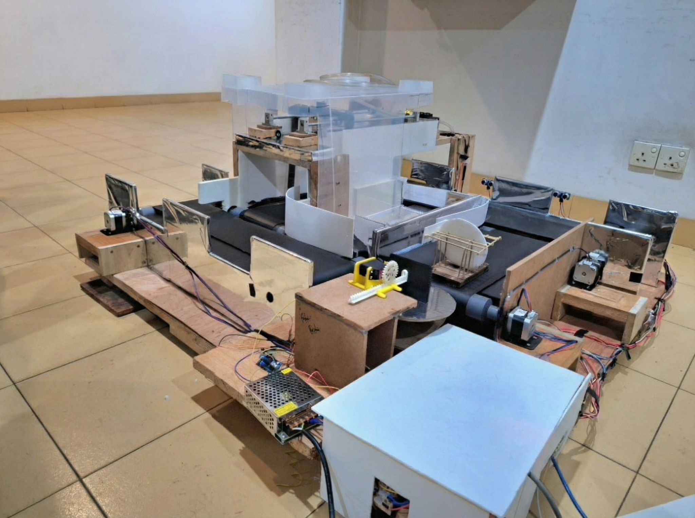
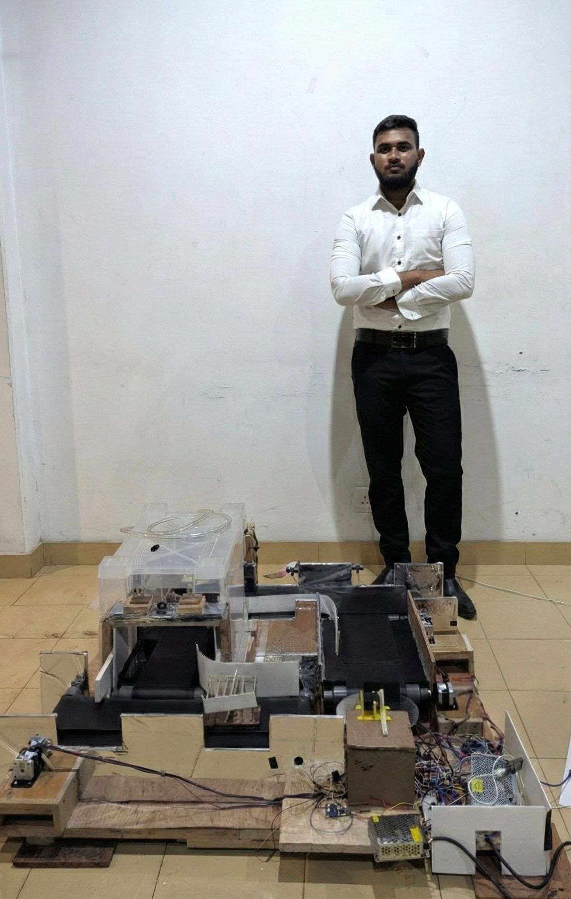
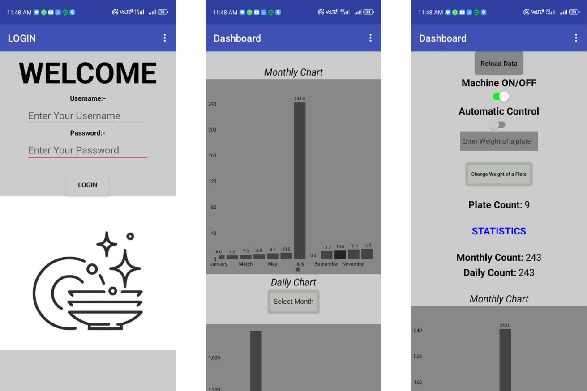

Automatic Dish Washing System




Overview
Developed as a 10-member collaborative project for the Semester 2 Fundamentals of Mechatronics module, the Automatic Dish Washing System is a fully automated, intelligent cleaning solution that seamlessly integrates mechanical engineering, electronics, and IoT technology.
Core Mechanical System
The system is built around a square-shaped conveyor belt driven by NEMA 17 motors. It features an automated queuing stage equipped with a Load Cell sensor that continuously measures the weight of the dish stack. Once the weight exceeds the pre-set limit, a Servo Motor acts as a pusher to smoothly transfer the stack onto the main conveyor. Throughout the process, ultrasonic sensors ensure precise sequential execution by pausing the belts as the stack approaches the next section.
Washing Mechanism
When the dishes enter the washing compartment, the conveyor halts and the automated cleaning cycle begins. A 12V Diaphragm Pump and Nozzle system deliver the water spray. To ensure superior cleaning coverage, the entire spray mechanism is mounted to a Lead Screw, which precisely controls the forward and backward motion of the nozzles over the dishes.
Control System & IoT Integration
The system's brain relies on a multi-microcontroller architecture. An Arduino Uno and Arduino Mega handle the dedicated hardware control, while an ESP32 drives the wireless and IoT functionality. This setup communicates with a custom mobile application that offers dual operation modes: Automatic and Manual. The IoT system enables real-time monitoring and cloud sync.
Outcome
This project was a deep dive into integrated system design. It provided extensive hands-on experience in combining sensor networks, mechanical actuation, and wireless control into a cohesive, functional mechatronics product.